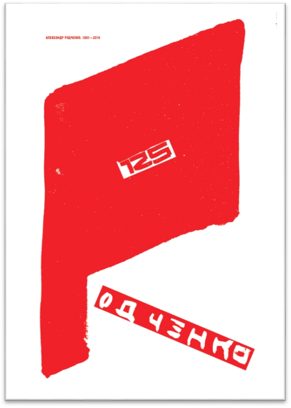

Осип Мандельштам (плакат Ю.Тореева)
Сопоставление этих двух имён вызывает в моей памяти 1992 год. Юрий Александрович, студент БГТХИ, работает над дипломным проектом: «Иллюстрации к поэме В.Хлебникова Зангези». В дополнение к основной теме дипломник создал серию иллюстраций к стихотворению О.Мандельштама «Кому зима – арак…». На меня, а также на членов экзаменационной комиссии эта работа произвела сильное впечатление. Она свидетельствовала о зрелости таланта дипломника, о способности его к глубокому осмыслению произведений искусства – не только изобразительного, но и поэтического.
С тех пор прошло 26 лет. И я опять вижу, как Юрий Тореев читает Осипа Мандельштама и находит у этого поэта всё новые образы и новые мысли. В результате появляется как будто такая простая, но глубокая по содержанию работа: плакат «Осип Мандельштам». Надпись на плакате почти отсутствует. Всякий культурный человек знает это лицо, прекрасное и одухотворённое. Всё же (для порядка) Художник пишет имя Поэта на узкой полоске белой бумаги, якобы разрезающей портрет пополам – подобно тому, как жестокая воля советских властей пресекла жизнь великого Поэта.
Лицо Мандельштама занимает всю площадь плаката без остатка: это убеждает даже непосвящённого зрителя в особом значении творчества Поэта для русского и мирового искусства. Но почему изображение лица имеет структуру сетки? Почему оно проницаемо для воздуха или лучей света? Ведь это может означать проблематичность творчества Поэта в целом, неоднозначность толкований его слова. Можно зачерпнуть воды решетом, но она сама собой уйдёт. Можно истолковать загадочные образы Поэта в том или ином духе, но никакое истолкование не окажется бесспорным и окончательным. Это одна из характерных особенностей творчества О.Мандельштама, придающая ему очарование непредсказуемости мысли и свежести образов.
Речь Поэта иной раз трудна для понимания. Она сродни вдохновенному бреду пифии над священным источником. Не пытайтесь перевести песни Поэта на наш обыденный человеческий язык. Здравый смысл – это не для него. Он живёт в другом пространстве и времени. Он вдохновлён божественным глаголом Вселенной: «Я дышал звёзд млечных трухой,/ колтуном пространства дышал».
В то же время Он ощущает себя как Первочеловек на голой Земле:
-
«Не своей чешуёй шуршим,
Против шерсти мира поём.
Лиру строим, словно спешим
Обрасти косматым руном».
Этот Первочеловек поёт, как может и как хочет, без правил (их ещё не существует). Поэтому лицо его на плакате Ю.Т. одновременно и существует, и нет. Оно прозрачно, как сеть и призрачно, как поэтические образы Мандельштама.
Как выразить в плакате трагизм личной судьбы Поэта, как внушить зрителю скорбь о безвременно прерванной жизни Его и возмущение жестокостью сталинского режима, погубившего Гения? Юрий Тореев решил эту трудную задачу одним гениальным приёмом: он поместил на правом глазу Поэта красный квадрат с текстом программного стихотворения Мандельштама.
Эффект этого приёма поразителен. Зритель видит здесь самую суть трагедии убийства Поэта. Ясно, что это не естественная смерть, а подлое убийство – с прицелом в глаз, причём жертва лишена возможности защищаться.
За что же пострадал Поэт? Мы видим , за что: за стихи. Но для того, чтобы это понять, нужно изменить своё положение в пространстве – лечь на правый бок лицом к плакату (или наклониться вправо на 90 градусов). Это можно трактовать и символически: для того, чтобы понять Мандельштама, нужно отказаться от привычных стандартов мышления и поведения. Нужно всё это перестроить и пересмотреть.
Сергей Аверинцев свою обширную статью «Судьба и весть Осипа Мандельштама» заканчивает фразой: «Поэтому Мандельштама так заманчиво понимать и так трудно толковать». И мы скажем: «Святая правда».
Родченко 1 2016
Это чёрно-белый шрифтовой плакат. Красное знамя – это буква «Р». Остальные буквы фамилии художника – «виртуальные». Они не вычерчены, а лишь угадываются как белые поля, окружающие чёрные фигуры (если у вас хватает воображения представить их себе).
В этом приёме «сходу» читается мысль о нереальности идей Родченко, об их нежизнеспособности и бесперспективности. То же самое можно сказать и обо всей идеологии большевизма и советской власти – то есть об идеях, вдохновлявших Родченко.
Родченко 2 2016
Второй плакат посвящён юбилею Родченко – 125 лет со дня рождения. Это, по существу, пародия на стандартный агит-стиль первых лет Советской власти. Огромное красное знамя на белом фоне гордо реет под углом 30*к горизонту. Оно же изображает букву Р – начальную букву фамилии художника. Энергичное движение буквы-знамени уравновешивается красной полосой с надписью остальных букв фамилии. Всё это – стандартные плакатные приёмы «наглядной агитации». Но почему мы не верим бодрости всей этой могучей графики, не ощущаем в ней искренности? Присмотревшись к плакату, замечаем: линии большого рисунка неровные, углы скруглённые, контур кое-где потёртый или разлохмаченный…Буквы фамилии написаны нетвёрдой и неумелой рукой, в букве Е нехватает вертикальной линии. Закрадывается подозрение, что всё это сделано без всякого уважения к личности и трудам Певца революции, поскольку беспощадное время вынесло приговор идеям и трудам «солдат революции».
Между прочим, рисунок на плакате напоминает лицо человека в профиль с открытым ртом и длинным языком, проповедующим революционные идеи. Плашка с числом 125 выполняет роль глаза.
Считаю не лишним сообщить, что я далека от намерения как-либо опорочить идею пролетарской революции и коммунизма. Первая попытка не удалась, но в будущем…всё возможно.
Александр Родченко 125
Глаз художника – мишень для разнообразных зрительных впечатлений. Со всех сторон летят к нему кванты световой энергии от всех вещей нашего мира, чтобы преобразиться в картины, плакаты, конструкции… остальные органы чувств – нос, рот, уши – второстепенны; в творчестве художника они почти не играют роли. Поэтому на плакате мы видим вместо носа чёрную полосу, а вместо рта – имя Художника. Что же касается других деталей портрета – они для выражения мысли автора плаката излишни.
Эль Лисицкий – 125 лет со дня рождения
На фоне культуры ХХ века Эль Лисицкий – гигантская фигура. Он стоит в одном ряду с Малевичем, Татлиным, Корбюзье, Мис ван дер Роэ…Значение его творчества для европейской и мировой архитектуры, дизайна, книжной и плакатной графики невозможно переоценить.
Почему же на плакате Ю.Тореева мы видим не великого маэстро, а скромного, любознательного и немного наивного юношу-подростка, ничем особенным не примечательного, кроме прекрасных чёрных глаз, глядящих на мир так, как будто он – мальчик – этот мир впервые открыл? – Художник нашёл свой оригинальный взгляд на гения дизайна и архитектуры: Лисицкий воплотил во всём своём многогранном творчестве идею молодости мира (или обновления его, как птицы Феникс, в начале ХХ века). Ведь во всех произведениях Мастера есть нечто новое и небывалое – подобно тому, как для юноши весь мир представляется новым.
В то же время Эль Лисицкий создавал свои новаторские проекты на основе давно известных законов геометрии и архитектуры. Поэтому начальная буква его имени выстроена из красных блоков на чёрно-белом фоне, а две красные «супрематические» полоски указывают (ненавязчиво) на главные «орудия» великого Мастера – ум и глаз.
Плакат Юрия Тореева отличается выразительностью, лаконизмом языка и глубиной мысли (что, впрочем, свойственно всему Его творчеству).
Эль Лисицкий (2) – 125 лет со дня рождения
Второй плакат на ту же тему разительно отличается от первого. Здесь мы видим яркие краски, свободную технику широкой кистью, большое «якобы-лицо» крупным планом. Это – тоже Лисицкий? Безусловно. Это воспоминание об искусстве Лисицкого – иллюстратора детских книжек и картинок религиозного содержания с подписями на еврейском языке.
Художник принадлежит всему миру, но он не «космополит». Он всю жизнь любил свой народ, много сил и времени уделял произведениям на темы еврейской религии, фольклора и литературы. На плакате «Эль Лисицкий 2» мы видим образ еврейского мальчика – лопоухого, немного наивного, с любознательным и живым характером. Можно даже узнать в нём «шуточный» автопортрет великого Мастера: в правом глазу его видим чётко очерченный квадрат, а на лице – супрематические чёрные полоски. Кроме того, портрет построен строго симметрично, хотя эта строгость смягчается нечёткими контурами пятен. Одним словом, это автопортрет «второго Лисицкого» - верного сына своего народа. Я не помню, чтобы в нашей прессе когда-либо вспоминали этот своеобразный патриотизм Художника. Будем благодарны Юрию Торееву за то, что он напомнил нам о мало известной стороне творчества Эль Лисицкого.
Л. Миронова,
25.03.2018